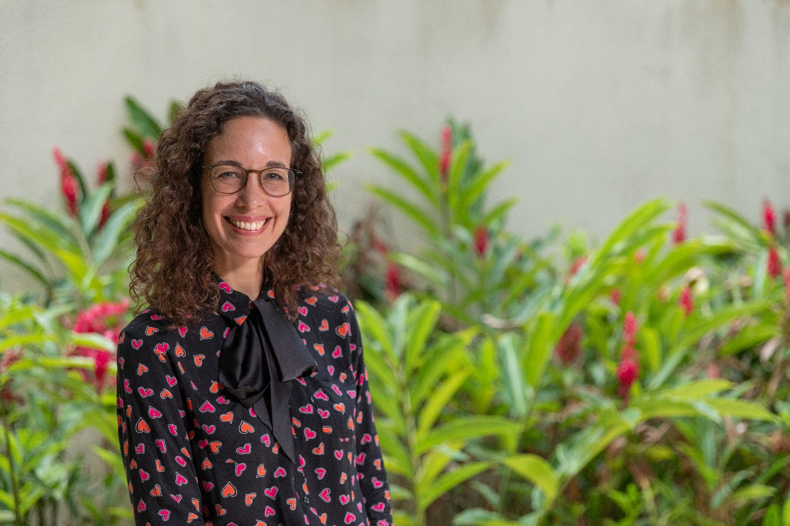

Keynote speakers for the 2019 Pacific Neighborhood Consortium Annual Conference and Joint Meetings (PNC 2019)
PNC 2019 Keynotes
Prof. Vanessa Evers
Director, Institute of Science and Technology for
Humanity (NISTH),
Nanyang Technological University
Vanessa Evers is a chair and Professor of Human Media Interaction, University of Twente, the Netherlands. She is also vice-dean of research for the Faculty of Electrical Engineering, Mathematics and Computer Science and the Scientific Director and founder of the DesignLab, a centre for multidisciplinary projects with societal impact based on 'Science to Design for Society'.
Vanessa has studied Information Systems at the University of Amsterdam, Business Information Science at UNSW, Sydney and has a PhD from the Open University UK. She has worked for the Boston Consulting Group has been a visiting Scholar at Stanford University, and a part-time professorship at the University of Delft.
Her work exists at the intersection of Computer Science, Psychology, Design, Philosophy and Electrical Engineering and focusses on human interaction with artificially intelligent systems and cultural aspects of Human Computer Interaction. It covers design of Artificially Intelligent systems that are able to interpret human social behaviours and respond to people in a socially acceptable way as well as the evaluation of the impact of such technology on people and society. She is a frequent public speaker in the media and at international fora such as the World Economic Forum at Davos.
Socially Intelligent Robotics
Dr. Vanessa Evers
The current expectation is that artificially intelligent systems such as robots or personal voice agents will be integrated into every aspect of our lives be it home-life, work, leisure, care or education. To ensure that this process happens in a responsible and seamless way I pose the theory that robots must be able to learn socially from people. I will argue that social norms, embedded in people and the context of use must be taken into account when designing artificially intelligent technology and must be interpreted automatically. Specifically, I will address the following questions:
- How do people learn and what is the role of culture?
- Can AI achieve social intelligence?
- How can the design of robots and their social behaviour impact acceptance and optimize collaboration?
By discussing my groups' previous research which involved practical deployments of robots in the real world, I will explore the fundamentally social relationship people have with autonomous robots and offer essential rules for effective human-robot collaboration

Prof. Bor-Chen Kuo
Director, Department of Information and Technology Education, Ministry of Education, Taiwan
Distinguished Professor, Graduate Institute of Educational Information and Measurement,
National Taichung University of Education, Taiwan
Professor Bor-Chen Kuo received the Ph.D. degree in electrical and computer engineering from the Purdue University, West Lafayette, IN, in 2001. He is currently a Distinguished Professor of the Graduate Institute of Educational Information and Measurement, National Taichung University of Education, Taiwan. Since 2015 He served as the President of Chinese Association of Psychological Testing. He was the Chief Editor of the Journal of Educational Measurement and Statistics (TSSCI), Taiwan from 2014 to 2017 and the Associate Editor of Educational Psychology (SSCI) since 2016. From 2019, Professor Kuo served as the Director of the Department of Information and Technology Education, Ministry of Education, Taiwan.
Professor Kuo received an Outstanding Research Award from Ministry of Science and Technology, Taiwan in 2018 and an Outstanding and Excellence Research Award from The R.O.C Education and Research Society in 2009. His research interests include computerized adaptive learning and testing, cognitive diagnostic modeling, machine learning, and artificial intelligence in education.
Technology Enhanced Adaptive Learning in Taiwan
Dr. Bor-Chen Kuo
In 2017, the Ministry of Education, Taiwan, launched an adaptive learning and assessment platform called Taiwan Competence based Adaptive Learning System (TCALS) (http://adaptive-learning.moe.edu.tw/). TCALS was developed based on knowledge structure with prerequisite relationship and uses information technology to deliver customized resources and orchestrate learning activities in order to adapt to the unique learning needs of individual learners. In TCALS, there are thousands of videos for micro-learning, items for instant diagnosing, interactive modules, intelligent tutoring agents and assessments of 21 st century competences for supporting learning through scaffolds.
TCALS has been widely used in many primary and secondary schools, such as
ICT instruction, flipped classroom, remedial instruction, and self-regulated learning.
Research evidences in support of the effectiveness of the system for adaptive teaching
and learning will be demonstrated. Additionally, data mining techniques were applied
to analyze student's learning behaviors and records and the findings will be also
presented.
Prof. Kenneth Dean
Raffles Professor of Humanities
Head, Chinese
Studies Department, National University of Singapore
Professor Kenneth Dean is Raffles Professor of Humanities and Head, Chinese Studies Department, National University of Singapore. He is the research cluster leader for Religion and Globalisation at the Asia Research Institute, NUS. His recent publications include Secularism in South, East, and Southeast Asia, NY: Palgrave, (2018) co-edited with Peter van der Veer, and Chinese Epigraphy of Singapore: 1819- 1911 (2 vols.), Singapore: NUS Press (2017), co-edited with Dr. Hue Guan Thye. He directed Bored in Heaven: a film about ritual sensation (2010), on celebrations around Chinese New Year in Putian, Fujian, China. Other publications include Ritual Alliances of the Putian Plain, Leiden: Brill, 2010 (with Zheng Zhenman); Lord of the Three in One: The spread of a cult in Southeast China, Princeton: 1998; and Taoist Ritual and Popular Cults of Southeast China, Princeton 1993: The Absolute State and the Body of the Despot, NY: Autonomedia 1992 (with Brian Massumi) He has published nine volumes of stone inscriptions gathered in Fujian and Southeast Asia. His current project is the construction of an interactive, multi-media Singapore Historical GIS (SHGIS) and Singapore Biographical Database (SBDB) database. These projects can be viewed online at: shgis.nus.edu.sg and sbdb.nus.edu.sg.
Digital Humanities and the Study of Singaporean Cultural History
Prof. Kenneth Dean
The Chinese Studies Department of NUS has developed a Singapore Historical
GIS (SHGIS) as well as a Singapore Biographical Database (SBDB). This talk will
outline the features of these two on-line databases and discuss ongoing efforts to expand
and link these databases. One set of new data we hope to add in is a TEI marked up
version of Chinese Epigraphy of Singapore: 1819-1911, which provides the names of
over 50,000 individuals who contributed to over 70 temples and huiguan. Another data
set is the digitized version of the Bukit Brown Burial Record (1922-1972) with the
names of over 68,000 individuals. The talk will also discuss the possibility of developing
a common digital platform for the Chinese diaspora across Southeast
Asia.

Prof. Yue-Gau Chen
Distinguished Research Fellow, Research Center for Environmental Changes, Academia Sinica
Executive Secretary, Center for Sustainability Science, Academia Sinica
Dr. Yue-Gau Chen is currently appointed as Distinguished Research Fellow and Executive Secretary at Research Center for Environmental Change and Center for Sustainability Science, respectively in Academia Sinica. He has also a co-appointment Professor in Department of Geosciences, National Taiwan University. He has long experience working on Environment Changes and Earthquake Geology; thus is familiar with scientific techniques on Stable Isotope Analysis, Quaternary Chronology, Morpho-tectonics, and Fault Kinematics. He was elected as fellow of Geological Society of America in 2008. He devoted himself to serve as Section President in Asia Oceania Geoscience Society from 2010 to 2012. In the meantime, he was also invited as the Executive Secretary of the Program on Applying Science and Technology for Disaster Reduction, National Science Council, Taiwan ROC. From 2012 to 2016, he spent his 4-year secondment as Director General of Department of Natural Science and Sustainability Development, Ministry of Science and Technology, Taiwan ROC, coordinating domestic as well as international scientific research programs. He therefore had a chance to serve in Steering Committee of Belmont Forum from 2016 to 2017. Recently he is still working for Belmont Forum to lead one of the Collaboration Research Actions (CRAs): Disaster Risk Reduction and Resilience (DR3).
Building Sustainable Society by Using Information and
Communication Technology:
Lessons from Disaster Management
Prof. Yue Gau Chen
The modern society has become multi-functional to support individuals therein surviving and developing altogether. Given good and efficient functions, a society may expand beyond million individuals as large as cities and countries. To keep such a gigantic system running is a complicated daily course for the management level. The entire system is actually composed of numerous sub-systems, which rely on each other at some points. Anything goes wrong in one sub-system would affect the normal function of not only the system itself, but also other systems related. Such a dependence is commonly recognized as the risk in maintaining our society to be sustainable. It is also considered as the vulnerability when we assess the impacts of disaster’s strikes. The overall societal performance actually depends on the vulnerabilities of all components that constitutes the society. Therefore to strengthen the societal resilience has to take all components into account. In terms of hazard themselves on the other hand, different natural hazard is caused by its own physics happening above or beneath Earth’s surface. For the purpose of hazard mitigation and prevention of specific hazard, it requires relevant knowledge to lower the societal vulnerability for all subsystems including the central governance system. All related approaches for the action can be defined to societal resilience building.
One of above actions, of common in applications on all kinds of hazards, is the
information distribution via efficient communication ways. It is of unequivocal
essential in a modern society in addition to basic life-supporting systems. Some of the
communication technologies, i.e., internet and cellphone, have provided us no-blind-
spot and non-stop service, fulfilling high-end demand of well-developed society. For
hazard managements they are also of critical. In particular during a disaster happening
time, rapid and efficient information distribution can significantly strengthen the
resilience and save possible loss. In the past, though we had radio or television, the
hazard information were mainly collected by oral reporting. Nowadays imagery or
video monitoring systems have become increasingly common than before. Such a big-
data input needs auto-managing system to diagnose and analyze before reporting to the
decision maker and then to the public. The broadcasting to the public has been also
rapidly evolved and mainstreamed by new medias, i.e., internet webpage and social
media platform. They can play even better role than traditional tools on information
distribution while considering the effectiveness. Moreover, internet is a two-way
communicating platform. Instantaneous information searching and grabbing can be
utilized as a new input source, which helps quite a lot for information updates. Since
the disasters are inevitable to a society, resilience building for all societal components
is necessary, especially by using new information and communication technology.

Dr. The Anh Dao
Vice President, Vietnam Academy of Agricultural Sciences
Dao The Anh is the Vice-President of Vietnamese Academy of Agricultural Sciences (VAAS) since 2017 in charge of international cooperation, post-graduation and policy communication. He was former Director of the Centre for Agrarian System Research and Development (CASRAD) and DDG of Field Crops Research Institute (FCRI) since 2006. With a first degree in Agronomy in Hanoi Agricultural University (1990), a master (1994) in Farming systems, a PhD (2004) in Agricultural, Rural and Food Economics at Montpellier SupAgro, France, he has developed an experience of 29 years in research and developement related to agricultural economics and farming system in Vietnam.
He started his research in family farming diversification in Red river delta. Recently, he focuses on agro-ecology farming systems, adaptation and mitigation for climate change of production systems, livelihood diversification and biodiversity use such as Geographical Indications and other community brand names, food safety management and certification, cooperative and farmer organization development, branding for agricultural products, post-harvest loss, agri-food value chain governance for smallholder in Vietnam. Through the research and development works, he also involved actively in the capacity building, advocacy for small farmers and policy level in Vietnam with IFAD and in other countries in Africa and South America. He also has taken a sharp interest in the role of safe agriculture and Zero Hunger initiative based on improving the position of small farms in sustainable food system. He has been the Family farming focal point in Vietnam for the year of Family farming 2014, initiated by FAO.
He has authored and co-authored more than 30 peer-reviewed papers in journals and Congresses and managed many national and international research projects in agricultural economics. Through the research and development works, he also involved actively in the policy advocacy for provinces, for MARD and higher level. More recently, he has taken a sharp interest in the role of safe agriculture and in poverty alleviation strategies based on improving poor and small food producer access to markets and agro-ecological products. His latest work was realized with FAO, IFAD, WB, ADB, CIRAD, OXFAM, IRD, ACIAR, IFPRI, JICA, DFATD, SNV, GRET, VECO, CIAT, IRRI, CIP, CCAFS, GRIPS and different International Universities... Recently, he has involved also in civil society works as Vice-President of Vietnam Science for Rural Development Association (PHANO) and Vice Editor in Chief of Vietnam Journal of Sciences for Rural Development since 2012. In 2019, he is recently nominated as Head of Vietnam Agriculture and Hydraulic Encyclopedia Edition Board. In 2018 he has received an Agriculture Merit Medal Grade Chevalier of French government, for his contribution of 25 years agricultural research.
Agriculture Biodiversity Challenge and Agro-Ecology
for Climate
Change Resilience and Food Security in ASEAN
Dr. The Anh Dao
The Southeast Asian comprises found to be one of the 25 global biodiversity hotspots which is the highest biodiversity centers in the world. All of 10 member states are Parties to the Convention on Biological Diversity (CBD). The Agro-biodiversity is expressed through diversity in ecosystems, species composition and genetic resources as well. Agro-biodiversity makes a significant contribution to each country economy, providing a basis for ensuring food security, maintaining genetic resources of animals and plants; and providing materials for construction, fuel and pharmaceutical resources.
Agro-biodiversity has changed significantly in ASEAN countries. Through agricultural intensification, many drivers affecting these changes including changes in land and water use and management, pollution and external inputs, over-exploitation and overharvesting, climate change, natural disasters, pests, diseases, alien invasive species, markets, trade, policies, population growth and urbanization, changing economic, socio-political, and cultural factors, advancements and innovations in science and technology. Of these, the pressure from the increasing human population combined with an increasing level of consumption which is resulting in overexploitation of biodiversity resources. In addition, land conversion and infrastructure construction has significantly reduced the area of natural habitats, increased ecosystem fragmentation, and degraded the habitats of many species of wild plants and animals. Natural resources, especially biological resources, are undergoing overexploitation. Of these, timber, non-timber and aquatic products are particularly vulnerable. Furthermore, alien species, environment pollution and climate change are all directly affecting the biodiversity. The agricultural intensification has created a lot of negative externalities in Vietnam and ASEAN.
There remain some challenges in achieving good management of biodiversity, including: (1) lack of effective inter-sectoral coordination mechanisms to respond to overlap in functions among relevant ministries and agencies; laws and regulations to protect biodiversity are still unsystematic and lacking in uniformity; (2) community involvement in biodiversity conservation has not been sufficiently mobilized, which leads to weak law enforcement; deforestation and illegal wildlife trade pose serious threats to biodiversity; (3) overall investments in biodiversity are insufficient, resulting in a lack of financial, human and technological resources. In the long run, Vietnam and other ASEAN countries have to find a balance between protectionism and sensible access to their national agriculture biodiversity to tackle challenges in biodiversity conservation, health issues, food security and climate change. In order to find the solution, the conventional agricultural intensification approach should be changed to agro-ecology, with ecological intensification principle, creating more positive externalities through eco-system services. The agro-ecology will find a trade-off between producing biomass for food security and protecting biodiversity for a climate resilience in our future.